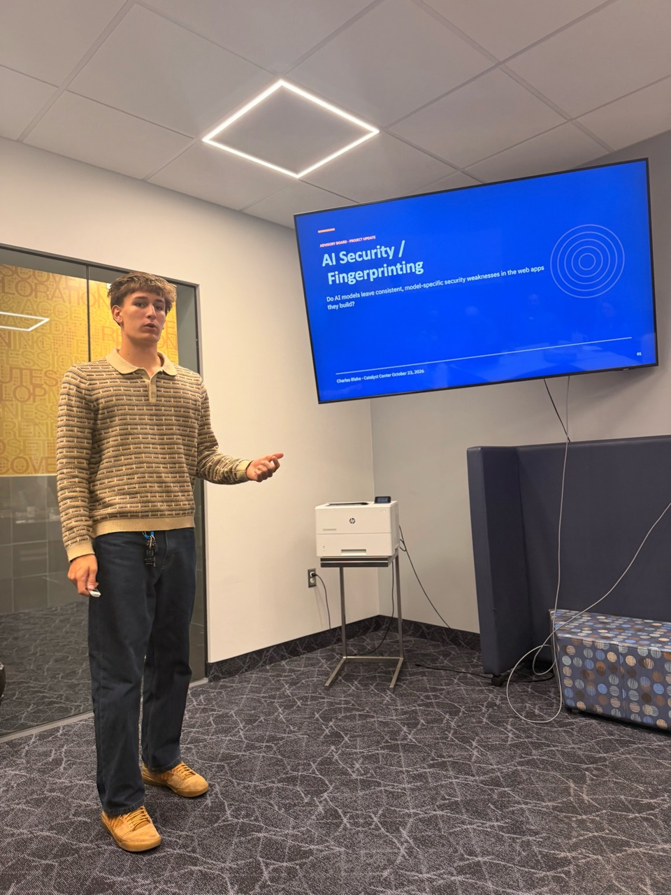
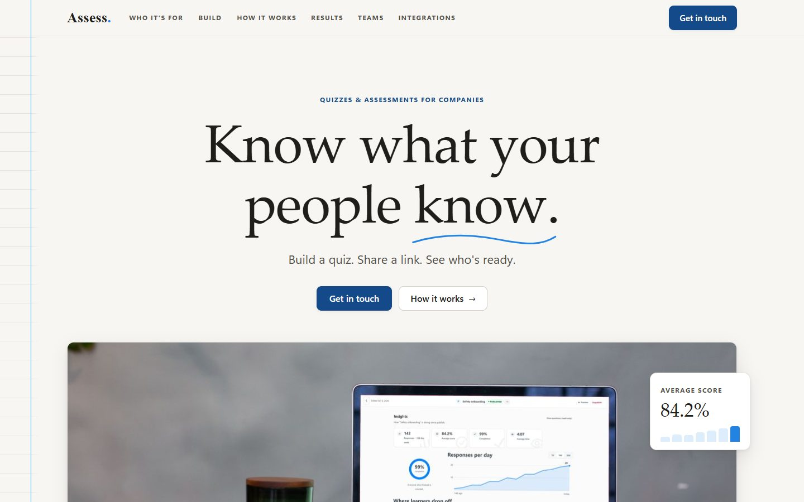
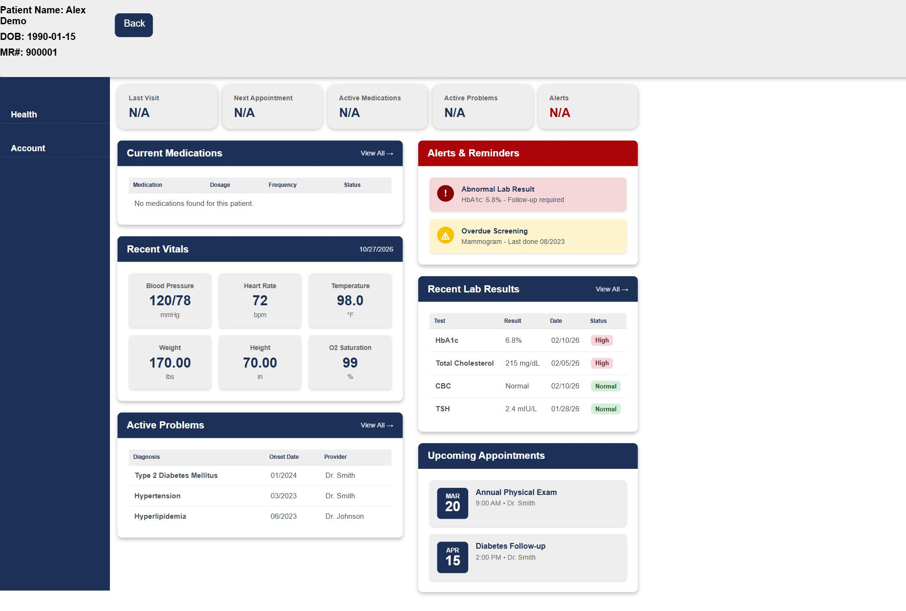

What I’m building.
Independent research, classroom builds, and tools I use myself. A look inside my work in AI, the web, and security.
Select a project to look inside.
-
Research · Featured
AI Security Fingerprints
Finding the security patterns AI leaves behind. Exploratory researchDo AI coding models leave repeatable security patterns? A research project combining controlled app generation, functional checks, and security evaluation.
Read the research story
-
Web platform
Assess
A public website for a company training platform. LiveA quiz and assessment platform for company training teams. I designed and built its public site, Assess.llc, and I’m a developer on the platform team.
Explore the Assess project
-
Web application
Medical charting system
Patient records, vitals, orders, and medications. BuiltAn electronic health record app with patient records, vitals, orders, alerts, prevention and medication screens. Built at Catalyst.
Explore the medical charting project
-
AI engineering
AI tools & local open-weight models
Coding agents and models running on real GPU hardware. OngoingI build with AI coding agents, mainly Claude Code and Codex. I use them to plan changes, write and review code, and test the results, including on this site.
I also run open-weight models myself. At Catalyst we have access to multiple HP ZGX Nano AI workstations, built on NVIDIA’s GB10 Grace Blackwell chip, so I can pull models from Hugging Face and serve them with open-source tools like Ollama, llama.cpp and vLLM on real GPU hardware.
Last year I learned the fundamentals: how agents work, tool calling, connecting models to tools through MCP, and getting local and cloud models to work together on multi-step tasks. This year I’ve started putting those ideas to work in my own workflow, using them day to day as I build the other projects on this page.
-
AI engineering
News classifier on a local GPU
Deploying a model, then measuring its accuracy. BuiltAn AI engineering lab at Catalyst. I deployed Qwen3-4B with llama.cpp on one of the class’s HP ZGX Nano workstations, pulled real articles from the AG News dataset on Hugging Face, and had the model sort each one into World, Sports, Business or Sci/Tech.
Then I measured it. On the same eight test articles, a rewritten prompt with clear category definitions and temperature set to 0 raised accuracy from 5 of 8 to 6 of 8.
-
Browser extension
Ollama Summarizer
Page summaries powered by a local model. BuiltA Chrome extension that summarizes the current web page using a model running locally through Ollama. Built with Chrome’s Manifest V3 extension format.
-
Systems & security
Cybersecurity labs
Build a server. Find its weaknesses. Secure it. OngoingPart of my school day is at the Davis Catalyst Center, Davis School District’s career and technical education center in Kaysville. I’m in its computer science pathway for cybersecurity.
The biggest part is the server room. We set up our own servers and run the operating systems on them in a dedicated server room. Then we’re encouraged to break into each other’s servers. Finding the holes in a classmate’s setup, and having them find the holes in yours, is how we learn to secure a server for real.
Alongside that: OverTheWire Bandit, SSH, packet analysis in Wireshark, and tracking down hidden wireless networks.
-
Design & development
This website
A personal corner of the web, built from scratch. LiveA personal portfolio built with HTML, CSS, and JavaScript, without a framework. The snowflake logo is my own design.
View the code on GitHub
What I work with.
- AI
- Claude Code, Codex, Ollama, vLLM, llama.cpp, Hugging Face, MCP, CUDA
- Web
- HTML & CSS, JavaScript, React, PHP, SQL
- Systems & security
- Linux, SSH, networking, Wireshark, authentication